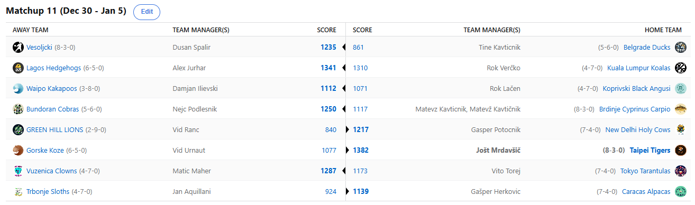

SEZONA 24/25
- Pravila in sistem tekmovanja
- Matchup1 (Oct 22 - Oct 27)
- Matchup2 (Oct 28 - Nov 3)
- Matchup3 (Nov 4 - Nov 10)
- Matchup4 (Nov 11 - Nov 17)
- Matchup5 (Nov 18 - Nov 24)
- Matchup6 (Nov 25 - Dec 1)
- Matchup7 (Dec 2 - Dec 8)
- Matchup8 (Dec 9 - Dec 15)
- Matchup9 (Dec 16 - Dec 22)
- Matchup10 (Dec 23 - Jan 29)
- Matchup11 (Dec 30 - Jan 5)
- Matchup12 (Jan 6 - Jan 12)
- Matchup13 (Jan 13 - Jan 19)
- Matchup14 (Jan 20 - Feb 26)
- Matchup15 (Jan 27 - Feb 2)
- Play-in (Feb 3 - Feb 23)
- Playoff 1 (Feb 24 - Mar 9)
- Playoff 2 (Mar 10 - Mar 23)
- Playoff 3 (Mar 24 - Apr 6)
2024/25 - Fantasy Koroška - sezona 8
MATCHUP 11 (Dec 30 - Jan 5)
Poročilo kroga
Zakorakali smo v leto 2025, zato na tej točki najprej vsem želimo veliko sreče in zdravja ter čim več uspešnih fantasy tednov! Pustimo formalnosti in gremo k poslu.
Zakorakali smo namreč tudi v 12. teden izjemno zanimive in napete 8. sezone NBA Fantasy Koroška, ki nas s svojo negotovostjo drži na robu sedežev.
Celotna baza lige razen enega nesrečneža je namreč zvrščena znotraj 5. zmag in kaj lahko se zgodi popoln shuffle mest pred koncem rednega dela in tako rekoč nič ni odločenega.
Kdo je ta osmoljenec se sprašujete? Žal gre za novopečeno franšizo Zelenobreških Levov, ki še naprej ne ujamejo prave forme in se jim obeta izpad po rednem delu.
Zgolj dve zmagi in napredni algoritmi jim napovedujejo malo več kot 20% možnosti, da ujamejo top14. Ranac si je baje že naredil člansko izkaznico v Billi in
je torej dobro pripravljen na dolžnosti, ki ga čakajo. Kdo bi si mislil, da lahko Krave pojedo Leve, sploh pa s takšno lahkoto.
Pred obračunom je Geps komentiral zadevo takole: »Dokler Leva nem jedo je za mene Krava kralj živali«. No, zdaj je poizkusil Leva in baje še vedno prisega na govedino.
Se pa Gepsu obeta daleč najboljša uvrstitev po rednem delu, lahko bi vam postregel s trenutno uvrstitvijo, pa so očitno ESPN-ovci še na dopustu, a vsekakor s scorom 7-4 cilja
vsaj na top5.
Najbolj zanimivo je bilo na obračunu dveh znanih gobezdal – Rok Verčko in Aleks Jurhar sta se nevede udarila kar na FA marketu. V kolikor bi Roki ponudil kakšen dolar,
natančneje 2 dolarja več za Keona Ellisa, bi namreč matchup zmagal. Tako pa je bil outbidan s strani direktnega konkurenta in prav teh 22 točk se je
izkazalo za odločilne. Medtem ko čaka, kje bo pristal njegov pikec Butler, je tako Aleks zabeležil še 6. zmago in se pozicioniral na tista mesta, kjer
te lahko boli kitara za razplet zadnjih krogov, ker itak nimaš pojma kaj ti prinesejo zmage ali porazi. V Kuala Lumpurju pa zvenijo alarmi, niti 287 točk
Jokiča namreč ni bilo dovolj za zmago in Verčko se nevarno približuje tistim mesto, na katere se želi prebiti Ilja.
Slednji je pokazal hladnokrvnost, pametno porabil nekaj zelencev in si zagotovil tesno zmago. Lačnov polet s Sejšelov v Benetke tako ni bil edini primer hitre spremembe s +30 na -30,
točke ali temperatura so edina razlika v obeh primerih knajpanja tega mojstra Wellingtonske govedine. Dopusta je konec in Lačenovski bo moral dati od sebe kakšen »fuck«,
če bo želel ne trepetati vse do zadnjega trenutka za morebitno uvrstitev v playoff. Je pa zadnji vlak za ta dosežek najbrž ujel Dili, ki bi v primeru poraza že zaostajal
za 2 zmagi in njegov % možnosti bi bil podoben kot Ranacov, zdaj pa se giblje na skoraj 50%. Se lahko rookie izvleče in izrine kakšnega izmed veteranov?
Prvi »na listi za odstrel« je season1 veteran Kups. Znova ni bil niti blizu, izgubil je še Iveyja in baje je Jan že tako obupan nad to sezono, da je začel zbirati podpise za spremembo
sistema tekmovanja v Dynasty mode. Vse to je pospremil z besedami: »Ja pizda vsaj tanko bi lahk, tk pa nemorm ama ništa«. Zdaj ga čaka še en teden, ko ne bo mogel ništa
(hihi), razen upal, da tudi Kakapoji izgubijo. Tokrat je free win podaril Herkonu, ki je bil tega walkoverja tako vesel, da je baje v Pragi svojemu prijatelju Aleksu
plačal »slap shot«, zadevo pa komentiral takole: »glavn da Jurharja nekdo klafutne, pa makr dobra kelnarca«. Se strinjamo Gašper, se strinjamo.
Zanimiva situacija se je zgodila v Taipeju, kjer so se tamkajšnji Tigersi sicer sprehodili do nove zmage, a vseeno izgubili mesto na lestvici zaradi tiebreakerjev. Je pa Jole modro dejal,
da moraš včasih narediti kakšen korak nazaj, da lahko narediš potem 2 naprej … »if you know what I mean«, je zaključil pogovor in se široko smehljal.
Visoki cilji, ni kaj. Ste kdaj videli leteče koze? Mi tudi ne in kakopak so tudi Utketove Gorske, kaj kmalu pristale na trdna tla. Da sam zase napoveš,
da boš najbolj gladko izgubil je new low, a Vid bi to napoved celo skoraj zadel. Ogromno spoštovanja do Tigrov, kot se za takšen kanonfutrček tudi spodobi.
Vidu je vsaj tekma Koroške lige prinesla nekaj sreče, saj posledično še ni imel možnosti izgubiti v FIFI :/
Ko smo ravno pri Koroški ligi, tja so priletele tudi Račke na čelu z malim malim floaterčkom Tajnom. Slednji je prišel, videl, zmagal … pokazal, da sta twin towerja Tamšeta pojedla še
premalo špinače in sta za njegova leteča polaganja vendarle prenizka. Tako bo Tine v LJ nesel vsaj eno zmago, če mu že v Fantasyju Dule ni pustil nobene možnosti.
Vesoljčki so s to zmago zahvaljujoč tiebreakerjem celo prevzeli prvo mesto in s tem naredili veliko uslugo človeštvu, ko se tam več ne nahaja Kavt.
Bo Dule uspel povezati redni del in končnico v eno uspešno sezono? Sezona 2019/20 je bila zadnja, ko so Vesoljčki nazadnje bili MED DESETERICO in letos je najbrž čas,
da ta črni niz prekinejo.
Uradno je danes »Kavt ni več prvi day« in sretno svima koji slave. Čas je že bil in Matevžev obrambni mehanizem je bil na spregled že včeraj, ko se je izgovarjal s tistim Lačnovim »zero fucks given«.
Verjamemo? Ne. Maščevalo se mu je norčevanje iz Embiida, ko slednji ni niti rabil odigrati vseh tekme, da so Krapi vseeno ostali na suhem.
Sladka zmaga za Nejca »še včera sm biv v rdeči coni pri predictionih« Podlesnika. Nimamo sicer časa šteti, da bi preverili resničnost tiste trditve:
»ful več tekm ma do konca«, a ker gre ravno za zmago nad prvo gofljo lige pustimo Nejčiju veselje in od zdaj naprej jemljimo vse izjave s kančkom dvoma.
Čestitke Kobram, ki se s to zmago tudi oddaljujejo od nevarne cone in svoj % možnosti dvigajo na 96, po tem ko so v nekem trenutku bili že krepko pod 50.
Ostal nam je le še zadnji matchup, kjer je Baba Vanga Vito Torej s svojimi Tarantelami izgubil kontakt z vrhom lige. Seveda tudi 7-4 nikakor ni slabo in Vito še ima svojo računico celo za BYE,
a tale poraz bi znal namesto mest 1-3 Vitu prinesti mesta v spodnji polovici deseterice. Saj je bil dokaj blizu, a vendarle predaleč, da bi resneje ogrozil visokoleteče Klovne.
Slednji so še naprej z naskokom najbolj unlucky franšiza v ligi. Daleč največ »prejetih točk« in Maher bi kaj lahko bil tudi precej višje z malce boljšim žrebom.
Vendarle pa je zdaj na varnih mestih in si je tako rekoč zagotovil končnico, kjer pa bo najbrž the team to avoid, kar se tiče moštev s spodnjega dela lestvice.
Lahko nadaljuje niz in zmaga še 4. zapored?
Kaj prinaša 12. teden? Vsekakor bo zanimivo na obračunu med Tarantelami in Alpakami, kjer se merita najvišje uvrščeni moštvi v tem krogu. Lahko morda Urnaut pahne Krape v
še globljo krizo in ali bodo Vesoljčki uspeli zmagati še 7. zapored proti Ježkom, ki so prav tako v dobri formi? Zadnji vlak za playoffe bo lovil Ranac,
ki NUJNO potrebuje zmago nad Black Angusi, s katero bi prav slednje pahnil v negotovost. Zanimivo bo!
Ne pozabite na predictione in good luck!